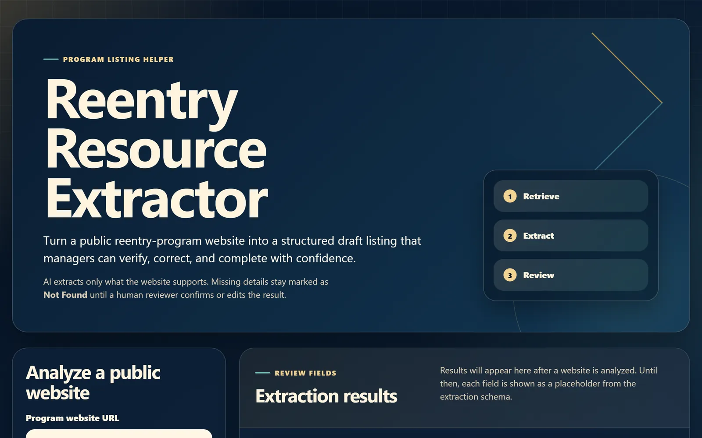
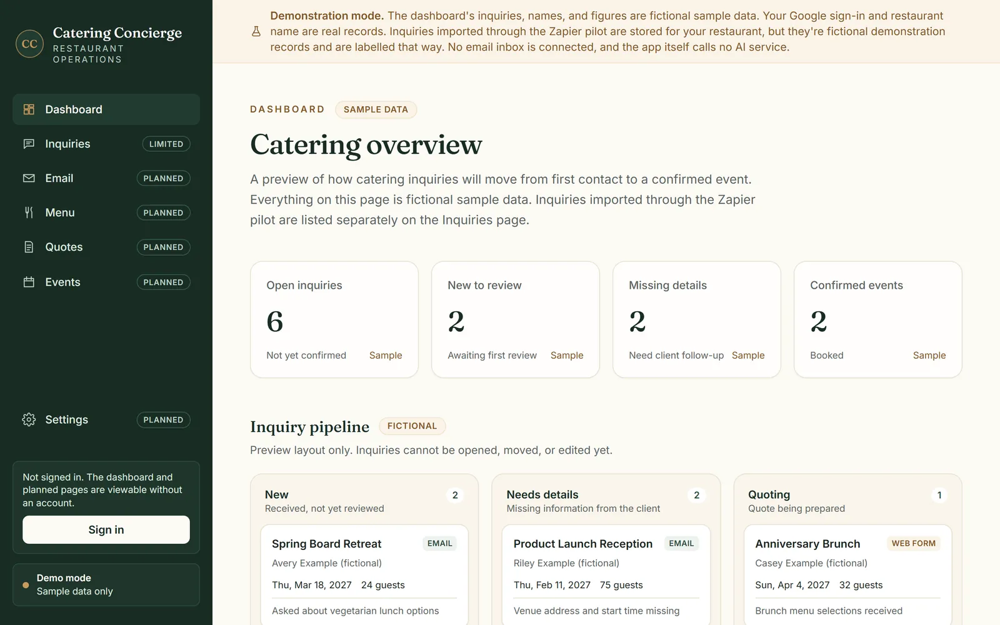
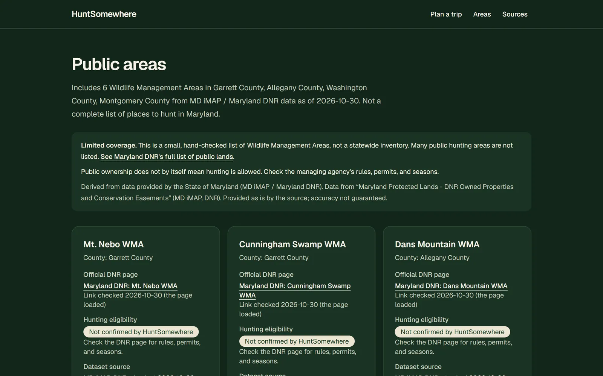

Application & automation builder
Useful software, built around your work.
I’m Amber Goding. I turn real-world problems into useful tools, explain my decisions clearly, and use AI thoughtfully.
Selected work
Less friction. More possibility.
Three working applications, each described from what was actually built: the problem, the approach, and the result.
-

AI integration
Reentry Resource Extractor
Turns a public reentry-program web page into a draft listing. The model is instructed to use only the page’s text, the server checks that each evidence quote appears on the page, and a person reviews every field.
Read the case study -

Screenshot shows the app’s fictional sample data. Workflow automation
Catering Concierge
Connects a Zapier workflow to a restaurant app: Zapier prepares each catering inquiry with an AI review, an authenticated endpoint stores it once for the configured restaurant, and signed-in owners review it in one place.
Read the case study -

Application development
HuntSomewhere
A trip planner for Maryland hunters: describe or set trip preferences, edit them, save the trip to a unique link, and see curated public wildlife management areas in matching counties, each with its official source and a note on what isn’t confirmed.
Read the case study
Services
Practical tools for real work.
Three established service areas, each starting with how the work happens today.
Application development
Web applications designed around the people who use them, from the first problem statement and data model to a working tool.
AI integration
AI used where it genuinely helps, such as extracting, summarizing, and organizing information, with clear limits and human review built in.
Workflow automation
Connecting the tools and steps behind repetitive work so information moves where it needs to go with less manual effort.

About Amber
Thoughtful tools start with understanding people.
I’m Amber Goding, an application and automation builder who enjoys turning complicated problems into tools that make everyday work easier.
I start by asking questions and clarifying the problem before suggesting a solution. From there, I break the work into manageable steps, communicate progress, and explain the decisions along the way.
More about AmberHave something in mind?
Let’s make it happen.
Tell me about the problem you’re trying to solve, the workflow you want to simplify, or the idea you want to build.
Start a conversation Preview element: this opens the existing contact form in the local app. No form is included here.